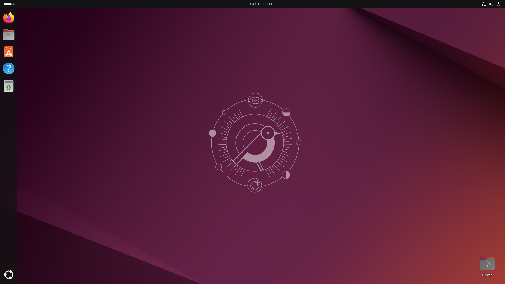
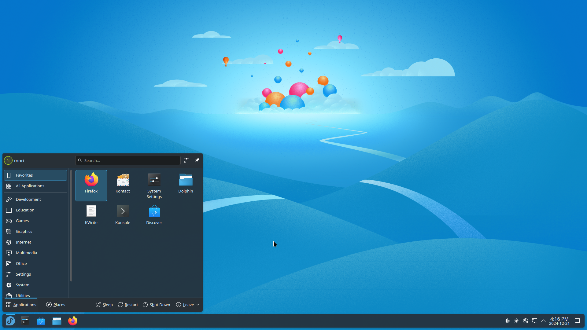
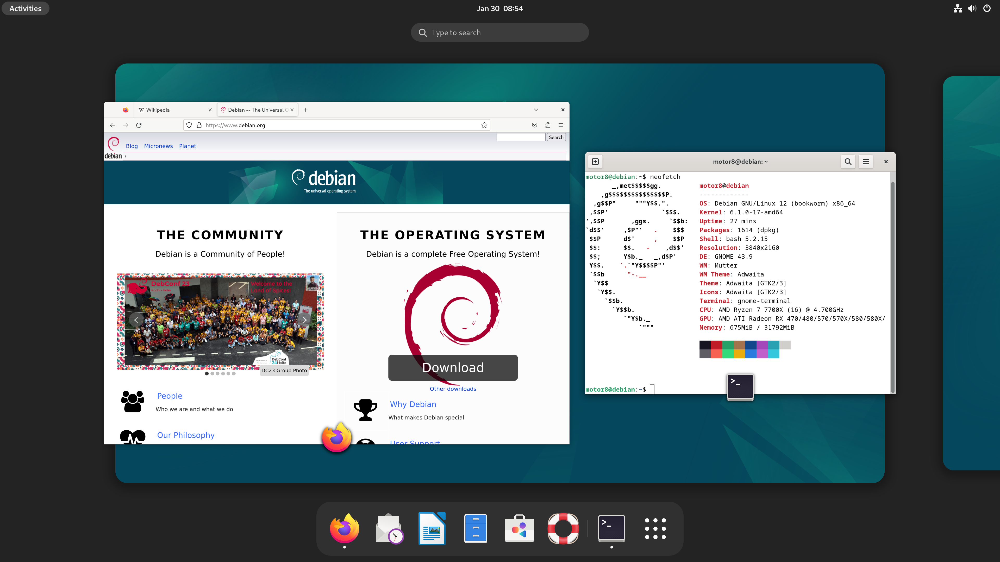
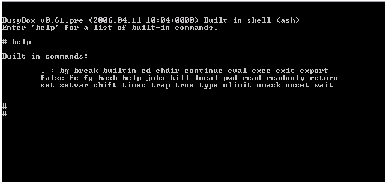

back to home
recommended for begginners

recommended for developers and programmers (if you don't know anything about linux don't install that. you need to know how to work with it)

recommended for begginners
recommended for hackers and programmers

recommended for programmers and developers
recommended for technology researchers ;)
recommended for who want to know what is in all of debian distros
recommended for who want a light and cd live os without installing in harddrive

MLN Studio copyleft (C) 2025 GPL